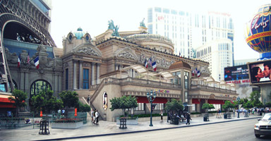
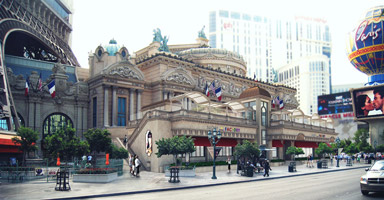

| Main | Bio | Journal |
My name is Robert Tayco, and I'm currently a student at CSN working toward an Associates in Web Design. I'm returning to school after earning my degrees in Architecture. Most recently, I've been a freelance graphic artist and web designer, and I'm transitioning from 3D architectural visualizations to web design and development.
In architecture, the creative process is a balance between beauty and a rigid structure, and I see the same elements in the creative process for web design. I think this is what interests me so much about it. I love designing, and I don't think I could find myself in a field where I didn't have a chance to do that. On the other hand, I also love writing code. I always like to know how the things I'm doing are going to work, and I like seeing how other people create the things they make.
In the short term, I would like to work at a web design firm to really hone my skills and learn as much as I can about as many different things as I can. I've been doing freelance work for a few years now, and eventually I'd like to transition back into doing that. As much trouble as it is handling an entire business by yourself, I love having full control over everything.
 



My favorite books
- Shogun by James Clavell
- A Storm of Swords by George R.R. Martin
- Invisible Monsters by Chuck Palahniuk
Please feel free to contact me here: robert.tayco@gmail.com
Below is my class schedule for the current semester
| Robert's Spring 2013 Schedule | |||||
|---|---|---|---|---|---|
| Time | Monday | Tuesday | Wednesday | Thursday | Friday |
| 8 am | |||||
| 9 am | |||||
| 10 am | GRC 183 | GRC 275 | GRC 183 | GRC 188 | |
| 11 am | |||||
| 12 pm | |||||
| 1 pm | |||||
| 2 pm | GRC 110 | GRC 110 | |||
| 3 pm | |||||
| 4 pm | |||||
| 5 pm | |||||
| 6 pm | GRC 207 | ||||
| 7 pm | |||||
| 8 pm | |||||
| 9 pm | |||||
| 10 pm | |||||